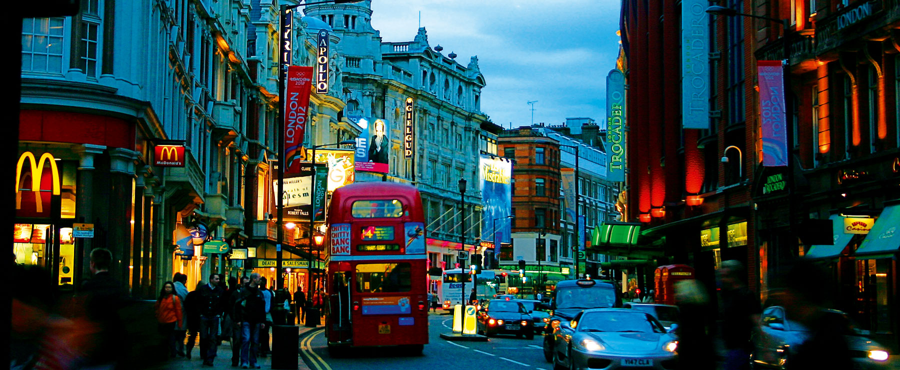
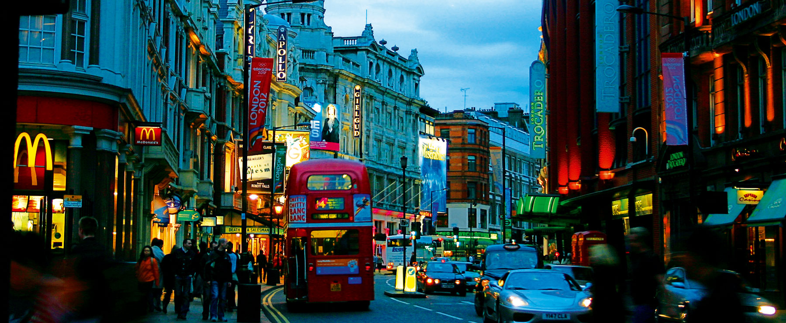
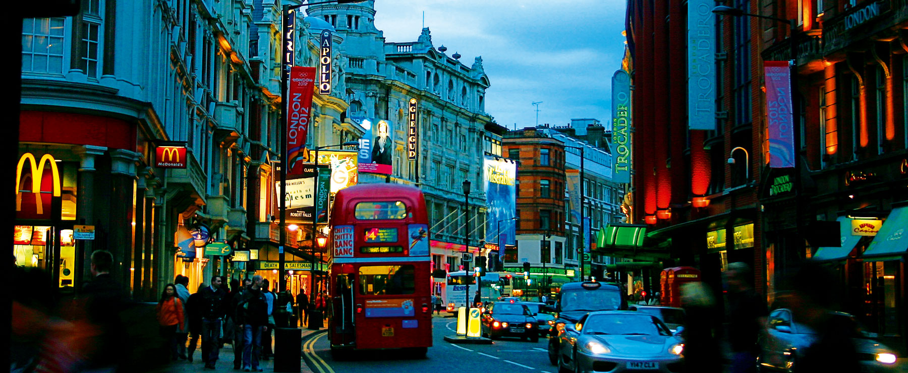
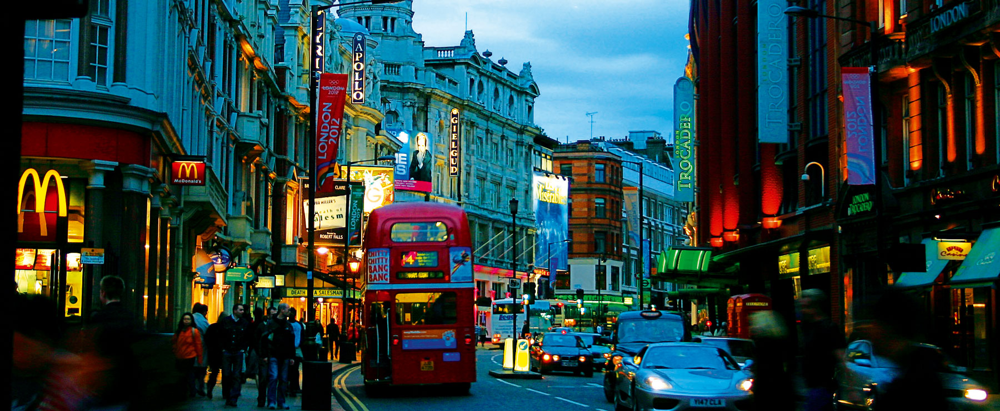

Walk in the footsteps of Neolithic ancestors at Stonehenge, a British icon with a history spanning 4,500 years. Decipher the mystery of the unique rock formation as you learn about the many theories surrounding it. Whether it was a religious site or a burial ground, it is definitely a masterpiece in engineering. The Simply Stonehenge tour offers plenty of time to explore The Stone Circle and exhibition about it, before returning to London mid-afternoon. Alternatively, choose one the tours below that visit several of England’s historic sites including Windsor Castle and Bath, with experienced tour guides and convenient coach travel to all destinations.
Combine your trip to Stonehenge with an excursion to Windsor Castle, which is said to be the Queen’s favourite residence. Explore the many reasons why from its rich royal history that reaches back to 1070 when William the Conqueror first built a castle on the site, to the lavishly decorated state apartments that feature paintings by Rubens, Van Dyck and Holbein. In addition to visiting Stonehenge and Windsor, some tour packages include trips to other iconic sites: trace the footsteps of famous students that have graced Oxford University, admire one of England’s finest Gothic cathedrals at Salisbury, or take a stroll around the picture-perfect village of Lacock.
Elizabeth II (Elizabeth Alexandra Mary; born 21 April 1926) is Queen of the United Kingdom and the other Commonwealth realms. Elizabeth was born in London as the first child of the Duke and Duchess of York, later King George VI and Queen Elizabeth, and she was educated privately at home. Her father acceded to the throne on the abdication of his brother King Edward VIII in 1936, from which time she was the heir presumptive. She began to undertake public duties during the Second World War, serving in the Auxiliary Territorial Service. In 1947, she married Philip, Duke of Edinburgh, a former prince of Greece and Denmark, with whom she has four children: Charles, Prince of Wales; Anne, Princess Royal; Andrew, Duke of York; and Edward, Earl of Wessex.